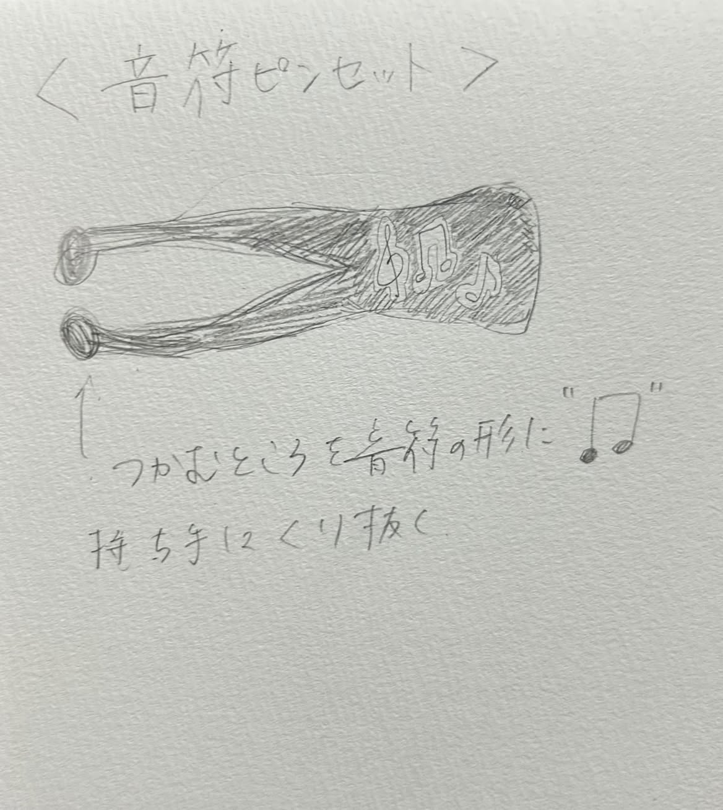
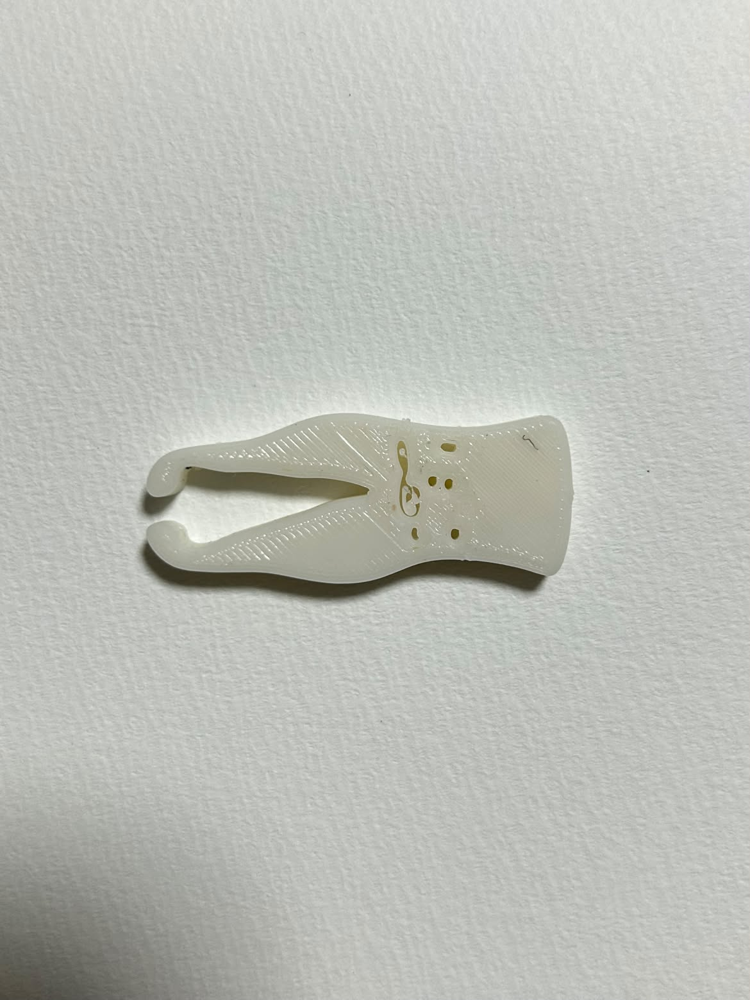
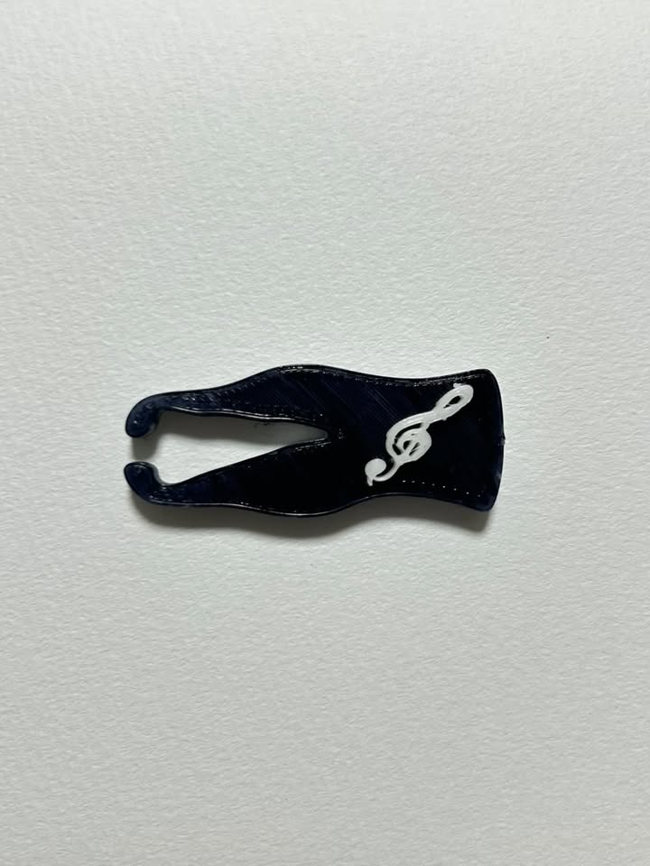
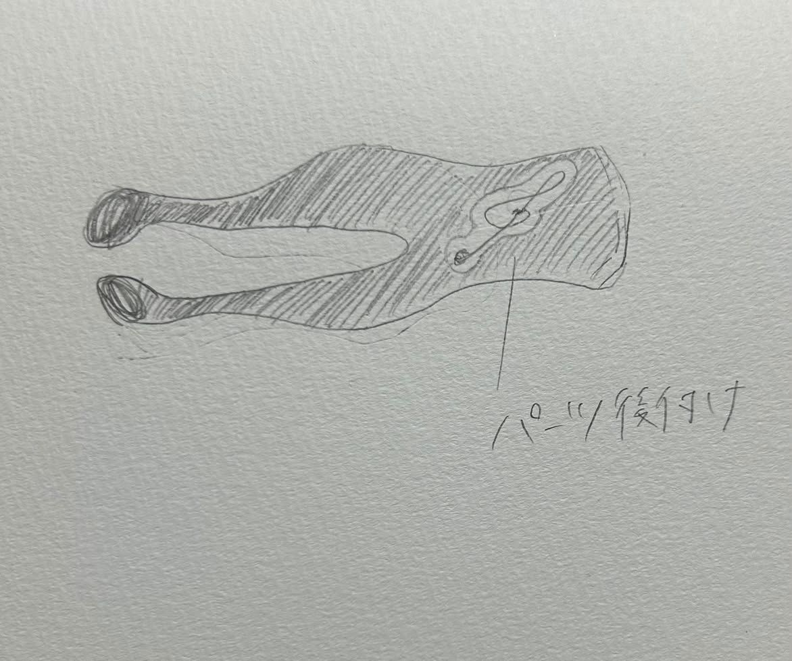
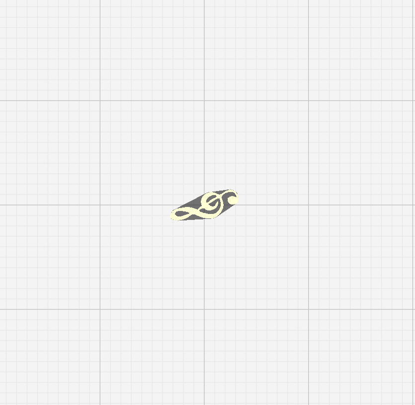

構造段階のスケッチと制作過程



しかし、プリントしてみると、くり抜いた音符の線が細すぎたせいか、埋まってしまいました。


音符をモチーフにしたピンセットです。
モノを先端は四分音符をイメージした形にしました。
音符らしさを表現するために、白黒の配色にしました。
また、ボディにはト音記号のパーツをつけ、かわいい印象にしました。
挟むところが太いため、楽譜をまとめたり、栞のように使うこともできます。
自分が好きな"音楽″をモチーフにした、かわいくて実用的なピンセットを作りたいと思ったからです。

しかし、プリントしてみると、くり抜いた音符の線が細すぎたせいか、埋まってしまいました。

その為、音符の部分はくり抜くのではなく、パーツとして後付けすることにしました。
ト音記号を一から作ることは難しかったので、トレースの技術を使いました。

